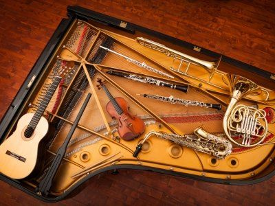

Talleres Artisticos

Sala de exposicion
Prof. Dulce Martinez
Ballet artisitico
Prof. David Garcia
Artes plasticas
Prof. Andrea Cerioni
Biblioteca municipal
Prof. Luis Castro Mere
Danza Regional
Prof. Liliana Martinez

Musica instrumental
Prof. Libeth Hernandez
Orquesta municipal
Prof. Julio Aguilar
Pinturas y dibujos artisticos
Prof. Javier Reyes
Regularización escolar
Prof. Adrian Izquierdo